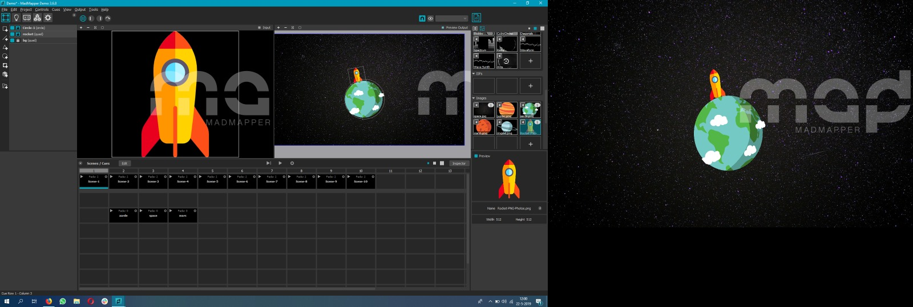
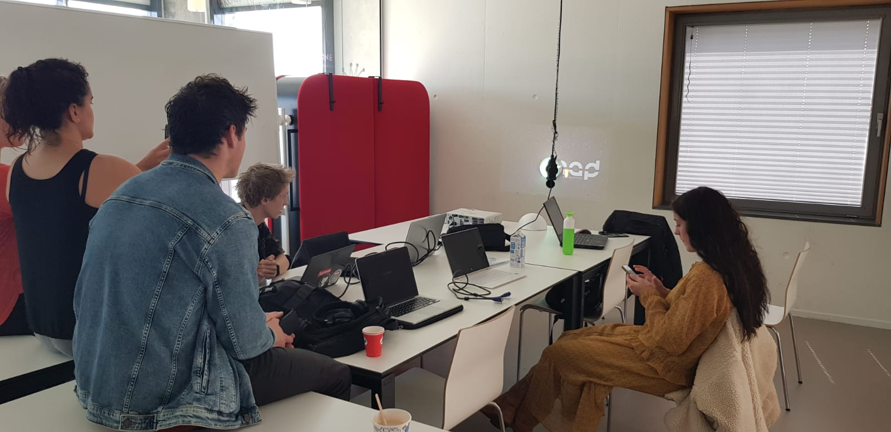
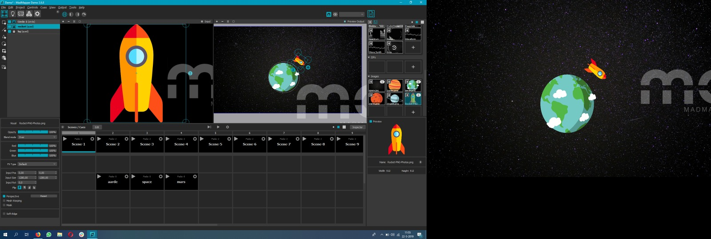
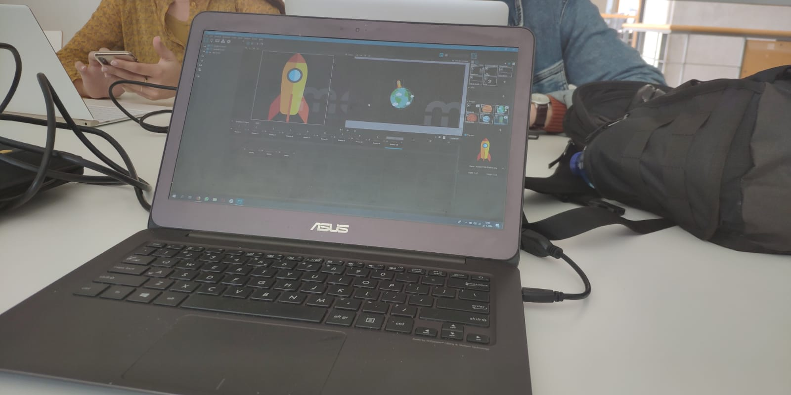

For this assignment we had to use a new program called madmapper.I was not familiar with it and had a hard time getting it to work. My laptop also had a lot of issues with running the program. This is why I teamed up with a group who struggled like me. Together we came up with the rocket flying around the earth. In the pictures below you can see what it looked like in the programm itself and in the video's at the bottom you can see the animation while the projector is connected. While making this assignment I did grasp some of the workings of it, but I have to admit that while time went by I did not remember any of it so I unfortunatly cannot explain how we did it. Some pictures are made by me and some by Sjoerd Klatser.
   Unreal engine is a programm for game making. To learn how to work with it I followed a step by step guide. It was horrible. This program is not for me! My laptop kept freezing up, the guidebook did not make sence to me and it was just a bit of a mess. Below I've inserted a video of all the assignments together. First I had to upload a banana to the enviroment. Then the banana had to be made yellow. The hard part was next. I wanted the banana to twirl en by following the guide I kept deleting the banana. I wasn't the only one in the class who this happened to. Thankfully with some help from other students it sort off worked.
The second part was making a game. I kept it simple because even that took ages with my laptop. The end product is a square you can control that eats the bananas.
My laptop had a lot of trouble with unreal engine. Because I hadn't done the last assignment, the game creation, at the same time as the first assignments I had already deleted the programm. Because it's a heavy programm and it already took a lot of extra time the first time around I decided to team up again with Lisa van Velden and make this one together. The video is made by her.
For this game we had a red square as the main player. The square had to eat the bananas and was slowed down by bigger squares which served as obstacles.